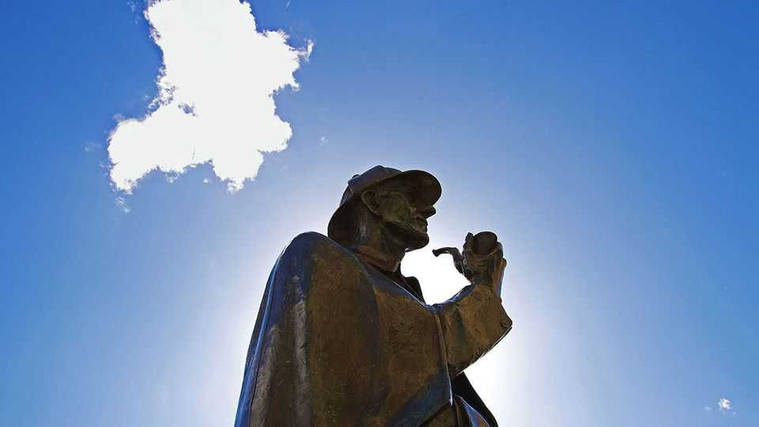

The curious case of the surgeon who inspired Sherlock Holmes
Joseph Bell, Arthur Conan Doyle’s professor, had an extraordinary gift for deduction

Nov 12th 2026
Sherlock Holmes was real—or so lots of people thought. Each month dozens wrote to Arthur Conan Doyle, imploring him to forward their letters to the famous detective. (A few asked him to investigate their neighbours; some pleaded for help finding a missing person.) When news of Holmes’s death reached the public in December 1893, newspapers published obituaries. It was said that some Londoners wore mourning bands.
Of course, Sherlock Holmes was not an actual person: he lived only on the page, in the minds of Doyle’s readers and, later, in films and TV shows. (No human literary character has been portrayed on screen more often—some 250 times—according to Guinness World Records.) But as a terrific new book points out, Holmes was based on a real person: Joseph Bell, a Scottish surgeon who had taught Doyle at the University of Edinburgh in 1878-81 and for whom the young medical student had worked as a clerk. In “Sleuth-Hound” Lindsey Fitzharris, a medical historian, tells the forgotten story of an exceptional man known as “the demon of diagnosis”.
Bell was preternaturally observant, able to glean information about patients before they opened their mouths. He could deduce whether a man was a carpenter or a mason from the calluses on his hands and distinguish a soldier from a sailor based on his gait. A person’s shoes could reveal an ailment or where they lived. A scar on the cheek could indicate someone smoked a short-stemmed clay pipe. In the amphitheatre of Edinburgh’s Royal Infirmary, Bell “transformed the business of diagnosis into electrifying theatre” for his students.
Henry Duncan Littlejohn, Edinburgh’s police surgeon, called on Bell for help with criminal investigations. Together, they performed painstakingly detailed post-mortem examinations. Scientific experiments were conducted. To prove a man was murdered and had not accidentally discharged his gun into the back of his own head, for instance, shotguns were fired at human cadavers at various distances and with different types of powder and shot.
So when Doyle decided to give detective fiction a go, at the age of 27, he based his protagonist on his old professor. He created an investigator who did not rely on chance or the blunders of criminals—such coincidences were an annoying trope of the genre, he thought—but one who succeeded with “the science of deduction and analysis”. Bell had shown that major clues could be found in seemingly minor details. “By scrutinising a scratch on a desk, a trace of cigar ash, or the guttering of a tallow candle, Holmes—and Bell—could build a case from what seemed like trivialities,” Ms Fitzharris writes. “Their genius lay not in knowing everything, but in noticing what others overlooked and uncovering its meaning.”
“Sleuth-Hound” will fascinate anyone interested in literary or medical history, forensics or true crime. (Though you need a strong stomach to read about some of the cases Bell and Littlejohn worked on.) It reveals something essential about the nature of the creative process, too. Like so many writers of fiction, Doyle drew on real people and events, but he transmuted them into something new. He took Bell, Littlejohn and not one but two Dr Watsons, using them as the bones on which to put the flesh of his stories. He gave Holmes flaws and idiosyncrasies all his own: an Inverness cape, ear-flapped cap and magnifying glass (not to mention a cocaine habit). It is the combination of these traits and influences that makes for one of the world’s most enduring characters.
Doyle dedicated an edition of the collected Holmes stories to Bell—and the association with the fictional detective became something of a curse. Until his death in 1911, Bell was constantly pestered by journalists and fans; people wrongly assumed he was as emotionally detached as the character. “I am haunted by my double,” Bell confessed to a friend. Sherlock Holmes may not have been real, but he proved a real nuisance to the man who inspired him. ■